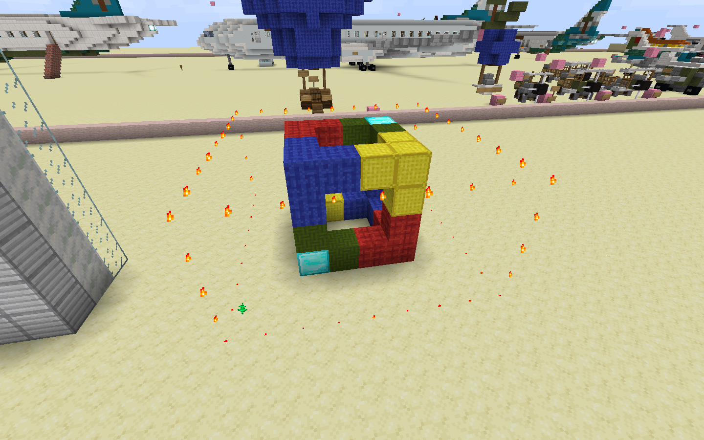

WorldEdit Tutorial by MRT Mapping Services
This book provides you with information to master basic WorldEdit, as well as more advanced techniques
History
TODO
How the book is sectioned
The first part, Basics outlines basic operations like //stack, //set, etc. and is minimally what is required on the MRT to be Conductor.
The scond part, Intermediate outlines more operations and tricks that are regularly used on the MRT.
The third part, Advanced outlines operations not commonly used on the MRT and may be very useful.
Author's Note
Hi there, thanks for reading this book. If you would like more chapters or explanations, do not hesitate to contact us, the MRT Mapping Services.
On behalf of the MRT Mapping Services, I wish you happy WorldEditing and make sure not to anger conductors or staff :))
-- __7d
Selection 1 (//wand, p1/p2)
Most WorldEdit operations require a selection in the world. One way of selecting an area is by using a wand.
The Wand
If the conductor is doing the w/e for you, you can skip this section.
//wand gives you a wand, which by default is a wooden axe. Using the wand, left-click sets p1 and right-click sets p2.
Positions
The default selection is cuboid, and hence requires two points on opposite sides, p1 and p2.
This image shows p1 and p2 indicated by diamond blocks. The fire outlines the selection after selecting them.
You can select the points with the wand as shown in the section above. If a conductor is helping you, see below.
- Mark p1 and p2 with clear blocks, eg. diamond in a white build
- Show the conductor where the points are
- Stand next to the points and say "p1" or "p2"
- if they're near, you can also say the material, eg. "points on diamond"
- Tell the conductor the operation(s) to run, eg. "set stone"
More selection types and methods are covered here.
//set and //replace
//set is equivalent to vanilla /fill. It sets all the blocks in the selection with the specified block(s).
The syntax is //set <pattern>, for example //set stone.
Note that you can specify multiple blocks, separated by commas without spaces: this yields an equal distribution of blocks. For example, //set stone,andesite

If there is additional block data, you can append [key=value] to the block ID. For example, stone_slab[type=top]

//replace is similar to //set, but in this case it replaces specific blocks instead of every block in the selection.
The syntax is //replace <mask> <pattern>, for example //replace air stone.
Multiple blocks are also possible for both mask and pattern, for example //replace air,red_wool stone,andesite.

For the query, you can also select all blocks except certain blocks by prepending !. For example, !air or !air,red_wool.

More about block masks and patterns is covered here and here.
Clipboard 1 (//copy, //cut, //paste)
This is one of the harder topics to explain, but with some intuition it will make sense.
//copy is like Ctrl+C: copies the current selection to the clipboard. //cut is like Ctrl+X: same as //copy, but replaces the blocks in the selection with air (by default). //paste is like Ctrl+V and simply pastes the contents of the clipboard.
The clipboard is relative to the player's position when it was copied or cut. For example, if you were to copy a selection, stand two blocks in front of it and copy, when you paste the clipboard, it would be two blocks behind you.
In the image below, the gold is the copy point and the emerald are the paste points. Note how the copies are at the same position relative to the emerald, as that of the original copy relative to the gold.

- mark a copy point with a visible material (preferably different fron that of points), stand next to it and say "copy on (block)" or "copy here"
- copying from a point is also possible, for example "copy on p2"
//copy has two flags (options):
-eto copy entities to the clipboard.-m <mask>to only include specific blocks from the selection. For example,//copy -m stone
You can also have multiple options: //copy -e -m <mask> or //copy -em <mask> since -e does not take further arguments.
//cut has the same flags as //copy, together with one additional optional argument [fill] which sets the selection to the block(s) specified instead of air after copying. For example, //cut stone replaces the selection with stone after cutting.

Clipboards may unintentionally be cleared, so if you need a backup of something you intend to //cut, please consider copying instead, or having a backup somewhere.
There has been one case where someone lost an entire airplane due to this
//paste has a few flags:
-eto paste entities in the clipboard.-ato prevent air from being pasted.-m <mask>to only paste specific blocks in the clipboard.-sto move the current selection to the region that has been pasted.
In this image, the top sunken cube was //copy'd, and then pasted with -a and you can see the sandstone in the middle of the cube showing that it did not get replaced by the air in the clipboard. The bottom sunken cube was not pasted with -a thus there is air in the cube instead of sandstone.

In this image, //paste -m red_wool was used. This can also be achieved with //copy -m red_wool and then //paste:

Note that if you want to paste entities, you must //copy and //paste with the -e flag.
Clipboard 2 (//rotate, //flip)
After copying to the clipboard, its contents can be rotated or flipped.
//rotate does rotation. Specify the angle to rotate in degrees (it can also be negative). For example, //rotate 90 or //rotate -90. Note that angles that are not multiples of 90 are not recommended as they may leave holes in the contents.
In this image, the top-left is the original cube and is also the result of pasting after a //rotate 0. From top-left clockwise, the copies are the result of: //rotate 90, //rotate 180/-180, //rotate -90

//flip does flipping. Specify the direction to flip to (n/s/e/w/u/d/ne/nw/se/sw). For example, //flip n to flip it in the north-south direction.
In this image, the center is the original cube, and north is to the top-right. The left cube is a result of //flip n/s, and the right //flip e/w.

Note that these are done relative to the player's point when the contents are copied to the clipboard.
Both of these by default rotate and flip along the horizontal plane. Rotating and flipping along the vertical plane is covered in TODO.
//stack
//stack stacks the selection in a particular direction, and is essentially the faster way of pasting a section individually.
It is also your favourite command, good luck with Mojangitis lol
You need to give it the number of times to stack, and the direction to stack. For example, //stack 5 u stacks the selection upwards 5 times.
It also supports the following flags:
-ais like in//paste, to prevent the air in the selection from being stacked in the stacked sections.-m <mask>to only stack certain blocks.-eto also stack entities.-sto shift the selection to the last section stacked.
This image shows the result of //stack 3 u: 3 copies over the original copy.

This image shows the result of //stack 3 u -s: same as above but the selection is moved to the last/furthermost copy.
This image shows the result of //stack 3 up -m red_wool: only the red wool is stacked.

More about //stack is covered in TODO.
//fill and //fillr
Both fill a hole or depression, and do not need a selection. They consider all the air around and under the player's feet and fills it with the specified block(s).
For example, if I were to be standing on the side of a valley, //fill stone 10 would cover the valley with stone within 10 blocks of the player, but below the stone is air.
An extra number, like in //fill stone 15 6 would fill for the Y-levels between that of the player's feet and 6-1=5 blocks below that.
The difference between //fill and //fillr is shown below: it fills any air pockets below the top Y-level.
For example, these show //fillr stone 10 6 and //fillr stone 15 6 respectively:


//line and //center
These are the p1 and p2 that we will be using:
//line draws a line of blocks between p1 and p2. For example, //line stone,andesite draws a line of stone and andesite.
//center sets 1-8 blocks at the midpoint of p1 and p2. For example, //center stone sets the midpoint to stone.
//move
This moves the selection to a direction, given the number of blocks to move and a direction.
For example, //move 5 w moves the blocks in the selection 5 blocks to the west.

Note that the selection by itself does not move along with the blocks, use -s to also move the selection.

It accepts the following flags:
-ato prevent air from being moved along with the contents.-m <mask>to only move specific blocks.-eto also move entities.-sto also move the selection along with the blocks.
This image shows the result of //move 5 w -m red_wool.
//undo and //redo
Similar to Ctrl+Z and Ctrl+Y/Ctrl+Shift+Z, //undo and //redo can undo and redo operations.
It optionally accepts a number representing the number of operations to undo or redo. For example, //undo 5 undoes 5 operations.
Note that there is usually a limit on the number of operations that you can undo or redo.
Be careful not to accidentally undo operations in another place that you wouldn't notice immediately! Clear your history with //clearhistory if needed.
Schematics (//schem)
Schematics let you import and save structures to and from your clipboard.
Schematic files have an extention .schem and are put in the plugin folder. On the MRT, schematic files can be uploaded and downloaded on the file server.
To load a schematic into the clipboard, do //schem load <file>. <file> is case-sensitive and does not need the .schem extension. For example, //schem load 7d-house loads 7d-house.schem to the clipboard. The clipboard can then be pasted as usual.
To save a schematic from the clipboard, do //schem save <file>. For example, after copying my house, I can do //schem save 7d-house and it saves to 7d-house.schem.
However, if 7d-house already exists, it would not save unless I overwrite it with the -f flag. For example, //schem save 7d-house -f. Note that the old schematic is lost.
On the MRT server, schematics can be uploaded and downloaded on the file server.
//size
//size, among other things, prints information about the selection. This can be done without a conductor.
Among other things, it prints useful information like distance between points and the area of your selection.
Useful applications include measuring the distance between places and dividing a structure into parts to fit under the operation limit of WorldEdit.

/tool tree and /tool deltree
/tool tree, or /tree lets you plant trees without using saplings. It can be done without a conductor and a selection.
First hold a non-placeable item and run /tool tree <name>, for example /tool tree oak. Then right-click somewhere to plant.
/tool deltree, or /deltree removes floating trees. After binding it to an item, right-click a floating tree to remove it. You can make a tree floating by removing the bottom-most log block and removing leaves that touch other structures.
To remove the tooling from an item, do /tool unbind.
Selection 2 (//shift, //expand, //contract, //inset, //outset)
This isn't really considered basic, but I added it here because it is a massive time-saver.
//shift shifts the selection a certain number of blocks in a direction. It is similar to //move but the selection is moved instead of the contents. For example, //shift 5 w moves the selection 5 blocks to the west.
//expand expands the selection a certain number of blocks towards a direction. For example, //expand 4 u expands the selection 4 blocks upward.
//contract contracts the selection instead. Think of it as pushing the selection back a certain number of blocks from a direction. For example, //contract 2 d renoves 2 layers from the top of the selection.
//outset and //inset are kind of like shortcuts for doing multiple //expands and //contracts respectively. //outset expands the selection in all 6 directions, eg. //outset 2:
It can also expand in only horizontal or vertical directions with the -h and -v flag respectively, eg. //outset -h 2 and //outset -v 2:


//inset is the reverse and contracts the selection instead, with the same flags.
Quiz
I don't know if this is a good idea but I decided to do something to cover tips and tricks
Questions
- You have the first floor of a building built and selected. You want 10 floors. What is the command?
- You have a section of road selected (no air blocks) on ground level and want to stack it through a mountain, so there must be air above the road. How would this be done?
- A block is selected at (1,1,1) and copied at (0,0,0). After rotating by 180 degrees and pasting, where is the block pasted at?
Answers
//stack 9 u. 1 selected + 9 stacked = 10- Three ways:
- First stack, then set the space above the road inside the mountain to air
- Redo the selection points to account for the air above the tunnel, and then stack
//expand <n> u, then stack (easiest)
- (-1,1,-1)
Conclusion
Congratulations, you have finished WorldEdit school!
If you have any questions about WorldEdit, feel free to ask conductors, staff or anyone experienced in WorldEdit.
If you think some parts in this tutorial are unclear or you think something is basic enough for this section, feel free to let MRT Mapping Services know.
Otherwise happy WorldEditing and don't upset the conductors and staff :)

Block Masks
Masks are used to select specific blocks from a selection or region. It is used in commands like //replace and flags like -m.
Or and And
Remember that multiple blocks can be combined with a comma. For example, stone,andesite matches either stone or andesite.
In this case, , here works as an OR operator. The AND operator is a space , requiring the entire mask to be surrounded by double quotes.
For example, "stone >water" means stone AND >water. Note that OR gets precedence over AND, so stone,andesite >water is (stone OR andesite) AND >water.
Under and Over
To select a block that is under or over (a) specific block(s), prepend < and > respectively before the block ID(s). For example, >stone selects all blocks above stone.
Patterns
Patterns specify the blocks that operations set or draw in the world. For example, it is used in //set, //line, etc.
Changing Distribution
From Basics you have known that one or more blocks can be specified to yield an equal distribution: stone yields 100% stone, and stone,andesite yields 50% andesite and 50% stone, or 1 part andesite and 1 part stone.
The distribution can also be changed: prepend n% to the block ID. For example, 3%stone,2%andesite,cobblestone yields 3 parts stone, 2 parts andesite and 1 part (the default) cobblestone.
Notice how the numbers need not add to 100. They also need not be integers.
Retaining Block State
This is useful in //replace, especially for stairs and slabs. Prepending ^ to a block ID retains the block state from the old block, like its orientation.
For example, if I have brick stairs facing a particular direction, //replace brick_stairs ^oak_stairs retains the position of the stairs while replacing brick with oak.
Block Categories
You can also use a block category to yield an equal distribution of blocks in the category. For example, //set ##wool yields all 16 colours of wool.
More on //stack
//stack can actually stack diagonally, saving time instead of manually copy-pasting on a diagonal.
//stack n x,y,z stacks a selection n times with an imterval of x,y,z between each copy. Each variable in x,y,z represents length in terms of the width, height or breadth of the selection.
For example, if I have a 2x1x2 block and I want 10 more of them to the east, with them being 4 blocks apart, I can do //stack 10 3,0,0, as shown below. Think of it as counting imaginary tiling of the same dimensions as the selection, and then pasting it after counting.
If I want the interal x,y,z to be in terms of blocks instead, add the -r flag.
For example, if I want a road going east to shift left 5 times every 10 blocks and I have 10m of road selected, I do //stack 5 10,0,-1. Think of it as offsetting the next copy by x,y,z from the selecrion or previous copy
Liquids (//drain, //fixwater, //fixlava)
These are some commands useful for dealing with water and lava.
//drain removes water and lava within a radius. For example, //drain 50 removes all water and lava within 50 blocks of the player. Adding -w also removes the waterlog from blocks.
//fixwater and //fixlava replace flowing water or lava with their still versions within a radius. For example, //fixwater 50 fixes water within 50 blocks of the player.
Selection Shapes (//sel)
Below are a list of selection shapes that are often used on the MRT. More selections are outlined in TODO.
//sel cuboid
The default selection. p1 and p2 are the opposite corners of the cuboid.
For a wand, left-click sets p1 and right-click sets p2.
//sel poly
Uses multiple points. Each point is an edge of a polygon. The height is derived from the highest and lowest points.
For a wand, left-click sets p1 and right-click selects the rest of the points.
//sel convex
Uses multiple points. Each point is the edge of a polyhedron.
For a wand, this is similar to //sel poly
//snow and //thaw
//snow covers a region within a radius around the player with snow layers. It also coverts water into ice. For example, //snow 50 does so within 50 blocks of the player.
//thaw does the opposite as it removes snow layers and converts ice back to water.